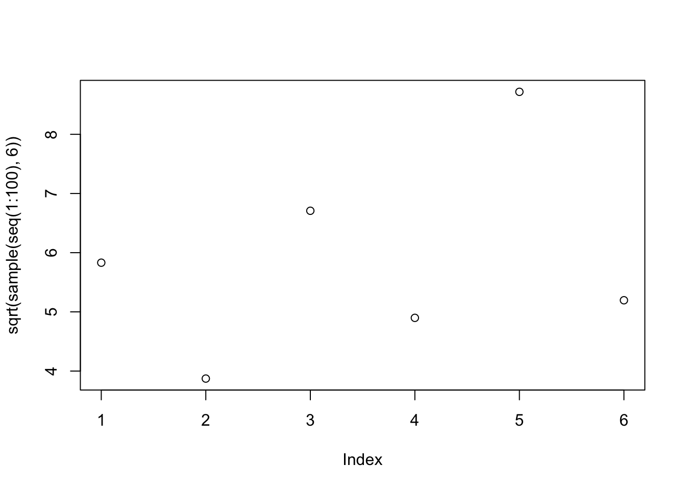
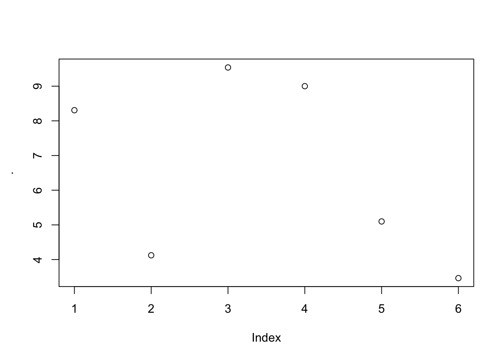

# this sections will analyse ...
1+2 # small comments can also live at the end of the line[1] 3# but not at the beginning: 3+4Un concept central est que R n’a pas de mémoire d’un jour à l’autre si vous le fermez. Alors oui, vous pouvez toujours “sauver votre espace de travail” mais je vous le déconseille fortement. La reproductibilité de vos analyses est en jeu. Nous allons apprendre à faire sans et nous verrons pourquoi c’est une force.
L’espace “Source” ou scripts, en haut à gauche par défaut sur RStudio permet d’éditer des scripts en format .R qui est essentiellement un format texte que vous pouvez ouvrir avec n’importe quel éditeur.
Le workflow typique est le suivant :
Reprenons. Un script est donc une collection de commandes qui permettent de reproduire vos analyses, dans six mois, ou par quelqu’un d’autre.
Tout ce qui suit un # est ignoré par R, ce qui permet de commenter vos scripts comme ci-après. Faites un usage raisonablement massif de commentaires.
# this sections will analyse ...
1+2 # small comments can also live at the end of the line[1] 3# but not at the beginning: 3+4RStudio utilise également un balisage sommaire pour créer des sections.
En commentant, vous aurez peut-être l’impression de perdre du temps mais tout le monde en gagne(ra) : votre vous-même de dans six mois, les reviewers et vos collègues, vous en seront reconnaissants.
Retour au code, je sens que vous voulez de l’action, pas des promesses.
L’indexation est une belle occasion de parler des opérateurs de comparaison, très utiles pour filter vos données. L’idée est qu’on teste d’abord une condition dont on peut se servir pour indexer
tonton <- c(4, 8, 2, 9, 1, 3, 5)
test <- tonton < 5 # tests a condition
test[1] TRUE FALSE TRUE FALSE TRUE TRUE FALSEwhich(test) # returns indices of TRUE[1] 1 3 5 6# this can be used to index
tonton[which(test)][1] 4 2 1 3# or more directly
tonton[test] # filter elements of tonton lower than 5[1] 4 2 1 3# conditions can be combined
tonton[tonton < 5 & tonton >=2] # same with lower than 5 AND higher or equal to 2[1] 4 2 3tata <- c(7:1)
tonton[tata %in% c(3, 4, 5)] # takes the elements of tonton for which those of that are in 3:5[1] 2 9 1Voilà une liste de tous les opérateurs de comparaison (?Comparison) :
| opérateur | signification |
|---|---|
< |
strictement inférieur |
<= |
inférieur ou égal |
> |
strictement supérieur |
>= |
supérieur ou égal |
== |
égal |
!= |
différent |
%in% |
dans l’ensemble |
Et à y être celle pour les opérateurs logiques (?Logic) sur lesquels nous reviendrons :
| opérateur | signification |
|---|---|
! |
NOT |
& |
AND (élément par élément) |
&& |
AND |
| |
OR (élément par élément) |
|| |
OR |
xor(x, y) |
OR (exclusif) |
Parfois on peut également avoir besoin de any, all1.
classAccrochez-vous à votre voisin·e, nous abordons un concept clé. Jusqu’ici nous n’avons manipulé que des nombres, avec ou sans assignation à une variable. D’autres classes d’objets existent en R.
On peut accéder à la classe d’un vecteur avec la fonction class. On voit que les chaînes de caractères sont des character pour R:
toto <- "a"
class(toto)[1] "character"Imaginons que nous mesurions des individus et que nous enregistrions leurs prénoms, sexe, stature et si, oui ou non, ils ont subi une formation à R. Ces quatres variables auront des natures différents :
prenom : sera plutôt des lettresstature : sera un nombre décrivant leur taillesexe : sera une étiquette pouvant prendre une et une seule des valeurs suivantes {femme/homme/autre}formation : sera un descripteur de type vrai/faux que l’on traduira en TRUE/FALSE.Nous avons déja enregistré trois individus :
prenom stature genre formation
Hildegarde 178 femme TRUE
Jean-Jacques 163 homme FALSE
Victor 184 autre TRUEcharacterTentons de créer la première variable, c’est à dire la première colonne, à la main :
prenom <- c("Hildegarde", "Jean-Jacques", "Victor")
prenom[1] "Hildegarde" "Jean-Jacques" "Victor" R ne fait pas d’histoires et nous a crée un vecteur de chaînes de caractères !
numericCréons maintenant le vecteur stature, on sait faire :
stature <- c(178, 163, 184)
stature[1] 178 163 184class(stature)[1] "numeric"Tous les vecteurs que nous avons crée jusqu’ici, prenom mis à part, était donc des numeric. Précisions que des variantes de numeric existent : double, integer, etc. mais vous n’aurez peut être jamais à vous en soucier.
factorLa colonne genre est un peu particulière puisque elle est une chaîne de caractères mais elle ne peut prendre que des valeurs définies, à savoir une et une seule valeur de l’ensemble : {homme, femme, autre}. La classe factor est là pour ça et la fonction factor permet de créer notre variable sexe :
genre <- factor(c("femme", "homme", "autre"))
class(genre)[1] "factor"genre[1] femme homme autre
Levels: autre femme hommeVotre œil aiguisé aura détecté deux différences par rapport à prenom : l’absence de guillemets autour de chaque valeur et une ligne supplémentaire qui indique les valeurs possibles, les levels de ce vecteur.
Petite digression : les facteurs en R sont très pratiques mais assez piégeux. Nous aurons l’occasion d’y revenir mais avant ça, évacuons les dernier·e·s informaticien·ne·s pur sang de la salle. Imaginons qu’un nouveau level, une nouvelle catégorie, doive être créée pour la variable genre, disons licorne. Tentons l’opération candidement :
genre2 <- c(genre, "licorne")
genre2[1] "2" "3" "1" "licorne"class(genre2)[1] "character"Malédiction (apparente)2 que nous expliquerons plus tard.
logicalLaissons reposer les facteurs pour l’instant et continuons notre création de variable avec la colonne formation:
formation <- c(TRUE, FALSE, TRUE)
class(formation)[1] "logical"formation[1] TRUE FALSE TRUEVoici une classe très utile, les logical, souvent issus de tests et de comparaisons logiques, comme survolé précédemmet par exemple :
stature > 180[1] FALSE FALSE TRUENous avons donc crée nos quatre colonnes :
prenom[1] "Hildegarde" "Jean-Jacques" "Victor" stature[1] 178 163 184genre[1] femme homme autre
Levels: autre femme hommeformation[1] TRUE FALSE TRUENous avons vu autant de classes différentes (character, numeric, factor, logical respectivement) et, bonne nouvelle, on a quasiment fait le tour des classes ! Il nous en reste deux, très voisines : list et data.frame.
listUne liste est un vecteur dont les éléments peuvent être de classes et de longueurs différentes, dont d’autres listes. Autrement dit, c’est la structure de données universelle en R :
list(toto="A", tata=c(1, 3))$toto
[1] "A"
$tata
[1] 1 3list(prenom, stature)[[1]]
[1] "Hildegarde" "Jean-Jacques" "Victor"
[[2]]
[1] 178 163 184Vous pouvez comparer le résultat à c(prenom, stature). Observez aussi au passage les doubles crochets droits ([[), dont vous n’aurez bien plus peur.
data.frameUn type de liste bien pratique, devenu archi central en R moderne, est le data.frame qui est une liste dont la double particularité est que tous ses éléments sont nommés et de même longueur. Une façon un peu alambiquée de dire qu’il nous aura fallu tout cela pour réinventer en R le tableau excel !3. Nous y reviendrons abondamment.
Comme vous pouvez vous en douter, personne n’importe les données comme cela, on préférera lire directement une table .csv ou .xlsx. Minute papillon, on y vient.
data <- data.frame(prenom=prenom,
stature=stature,
genre=genre,
formation=formation)
data prenom stature genre formation
1 Hildegarde 178 femme TRUE
2 Jean-Jacques 163 homme FALSE
3 Victor 184 autre TRUEclass(data)[1] "data.frame"is.* et as.*Les fonctions is.* permettent de tester les classes :
is.logical(formation)[1] TRUEis.factor(prenom)[1] FALSEis.data.frame(data)[1] TRUEEt les fonctions as.* permettent de convertir les classes, lorsque la conversion est pertinente :
as.factor(prenom)[1] Hildegarde Jean-Jacques Victor
Levels: Hildegarde Jean-Jacques Victoras.character(genre)[1] "femme" "homme" "autre"[,Revenons à notre data.frame data, un objet en deux dimensions : il possède des lignes et des colonnes. L’indexation vue précédemment sur des vecteurs, des objets en une seule dimension, fonctionne dans le même esprit mais il nous faut renseigner les indices pour chaque dimension. Si l’un des indices n’est pas renseigné, toutes les positions concernées sont retournées mais il ne faut pas oublier pour autant la virgule !
Par convention la première dimension est celle des lignes, la deuxième celle des colonnes. Quelques exemples ci-dessous qui ne font qu’extraire les données. Nous pourrions aussi les modifier avec l’opérateur d’assignation <- comme vu précédemment.
data[1, ] # first row prenom stature genre formation
1 Hildegarde 178 femme TRUEdata[, 1] # first column[1] "Hildegarde" "Jean-Jacques" "Victor" data[-2, ] # everything but the second row prenom stature genre formation
1 Hildegarde 178 femme TRUE
3 Victor 184 autre TRUEdata[c(1, 3), -3] # first and third row, all columns but the third prenom stature formation
1 Hildegarde 178 TRUE
3 Victor 184 TRUEVous aurez noté qu’en ne sélectionnant qu’une colonne, par exemple data[, 1] ci-dessus, on perd la nature de data.frame pour revenir à la classe d’origine de la colonne. Souvent pratique, parfois glissant. Pour ne pas perdre la classe d’origine, il suffit d’ajouter drop=FALSE à votre opération d’indexation, après tous les indices :
data[, 2, drop=FALSE] stature
1 178
2 163
3 184data.frameLes colonnes uniques peuvent aussi se sélectionner avec l’opérateur $ qui permet d’accéder à un élément de liste, pourvu qu’il soit nommé. Les data.frames étant des listes nommées, cela fonctionne :
data$stature[1] 178 163 184Les doubles crochets droits [[ permettent eux aussi de sélectionner positionnellement, ou nominativement, l’élément de liste concerné. Les deux commandes ci-dessous seront équivalentes :
data[[3]][1] femme homme autre
Levels: autre femme hommedata[["genre"]][1] femme homme autre
Levels: autre femme hommeUn data.frame est en effet une liste d’un type un peu particulier : tous ses éléments ont la même longueur et sont nommés. La preuve en images (presque) :
class(data)[1] "data.frame"is.list(data)[1] TRUELes listes, data.frame y compris donc, sont les objets les plus utiles à un niveau un peu plus avancé. Notamment grâce au package purrr qui rend les choses conviviales, lisibles… et efficaces.
[ versus [[L’indexation avec une simple ou une double paire de crochets est souvent source d’incompréhension d’autant que sur des vecteurs le résultat est le même :
toto <- 5:3
toto[1] 5 4 3toto[2][1] 4toto[[2]][1] 4Gardez à l’esprit que la double paire de crochets droits ([[) ne s’utilise que sur des listes (data.frame y compris donc).
Pour expliquer simplement la différence entre [ et [[, disons qu’une liste est un train de marchandise sans locomotive avec un ou plusieurs wagons.
[ permet de sélectionner un wagon, le résultat est toujours un train, certes minimaliste[[ permet de sélectionner le contenu du wagon qui n’est donc plus un train mais une vache, une palette ou des voyageurs :tata <- list(wagon1="a", wagon2=1:3)
# [ picks a list element
tata[2]$wagon2
[1] 1 2 3class(tata[2])[1] "list"# [[ picks a list element AND drops the list
tata[[2]][1] 1 2 3class(tata[[2]])[1] "integer"Notons que $ est équivalent à [[:
tata$wagon2[1] 1 2 3matrixMentionnons les matrices qui sont des tableaux rectangulaires de nombres. Elles se créent avec la fonction matrix et en spécifiant les valeurs de remplissage et le nombre de lignes et/ou de colonnes :
m <- matrix(c(3, 1, 9.2, 6, 7, 0), nrow=2)
m [,1] [,2] [,3]
[1,] 3 9.2 7
[2,] 1 6.0 0Les matrix et les data.frame possèdent de nombreux points communs. On peut notamment accéder à leurs dimensions, noms de lignes et colonnes avec les mêmes fonctions :
dim(m)[1] 2 3nrow(m)[1] 2ncol(m)[1] 3rownames(m) <- c("plop", "plip")
rownames(m) # idem for colnames[1] "plop" "plip"Une opération courante sur des matrices consiste à faire des calculs marginaux, par exemple calculer la somme par colonnes. La famille apply permet ce type de calcul. On va renseigner trois arguments (voir ?apply et ses exemples) : l’objet sur lequel travailler; la dimension sur laquelle calculer (1 pour les lignes, 2 pour les colonnes); et enfin la fonction à appliquer, sans parenthèses :
apply(m, 2, sum)[1] 4.0 15.2 7.0arraysPar souci de complétude, l’idée de matrice se généralise dans des dimensions supérieures à 2. Pour le dire autrement, une matrix est un array à deux dimensions.
Les array se créent dans le même esprit : les valeurs de remplissage d’abord, puis on précise les dimensions. Ci-dessous, un array de deux tranches de matrices de 2x3.
a <- array(data=c(1, 2, 3, 4, 5, 6, 7, 8, 9, 10, 11, 12), dim=c(2, 3, 2))
a, , 1
[,1] [,2] [,3]
[1,] 1 3 5
[2,] 2 4 6
, , 2
[,1] [,2] [,3]
[1,] 7 9 11
[2,] 8 10 12L’indexation fonctionne ici aussi. Par exemple si l’on veut la valeur de la première ligne, troisième colonne, deuxième tranche :
a[1, 3, 2][1] 11Voici quelques fonctions à connaître, rangées par classes d’objets.
numericQuelques fonctions utiles pour décrire des vecteurs numériques (numeric) :
x <- c(5, 4, 3, 2, 1)
length(x)
min(x)
max(x)
range(x) # shortcut for c(min(x), max(x))
median(x) # shortcut for quantile(x, probs=0.5)
sum(x)
mean(x) # average
sd(x) # standard deviation
var(x) # variance[1] 5
[1] 1
[1] 5
[1] 1 5
[1] 3
[1] 15
[1] 3
[1] 1.581139
[1] 2.5factorf1 <- factor(c("apple", "banana", "banana", "pear", "grape", "grape"))
f2 <- factor(c("yellow", "yellow", "yellow", "green", "red", "green"))
length(f1) # length
levels(f1) # levels, as character
nlevels(f1) # number of levels, shortcut for length(level(f1))
table(f1) # count occurences
table(f1, f2) # cross-tabulate factors[1] 6
[1] "apple" "banana" "grape" "pear"
[1] 4
f1
apple banana grape pear
1 2 2 1
f2
f1 green red yellow
apple 0 0 1
banana 0 0 2
grape 1 1 0
pear 1 0 0characterbla1 <- "tonton"
bla2 <- "tata"
nchar(bla1) # count characters
paste(bla1, bla2, sep=" et ") # see also paste0
toupper(bla1) # convert to upper case. see also tolower()
gsub("o", "i", bla1) # replace all 'o' with 'i' in bla1. see ?grep
substr(bla1, 2, 4) # character from positions 2 to 4
abbreviate(bla1) # abbreviate[1] 6
[1] "tonton et tata"
[1] "TONTON"
[1] "tintin"
[1] "ont"
tonton
"tntn" Les derniers exemples montrent des manipulations de chaînes de caractères. Le package stringr remplace avantageusement ces approches “historiques”. Nous y reviendrons.
data.framedim(data)
nrow(data)
ncol(data) # equivalent to length(data)
summary(data) # a summary, column-wise
head(data) # show only the first rows
tail(data) # show only the last rows
# View(data) # show an interactive viewer for your data.frame
str(data) # show the structure of your data.frame[1] 3 4
[1] 3
[1] 4
prenom stature genre formation
Length:3 Min. :163.0 autre:1 Mode :logical
Class :character 1st Qu.:170.5 femme:1 FALSE:1
Mode :character Median :178.0 homme:1 TRUE :2
Mean :175.0
3rd Qu.:181.0
Max. :184.0
prenom stature genre formation
1 Hildegarde 178 femme TRUE
2 Jean-Jacques 163 homme FALSE
3 Victor 184 autre TRUE
prenom stature genre formation
1 Hildegarde 178 femme TRUE
2 Jean-Jacques 163 homme FALSE
3 Victor 184 autre TRUE
'data.frame': 3 obs. of 4 variables:
$ prenom : chr "Hildegarde" "Jean-Jacques" "Victor"
$ stature : num 178 163 184
$ genre : Factor w/ 3 levels "autre","femme",..: 2 3 1
$ formation: logi TRUE FALSE TRUEgraphics:::plot.data.frame
set.seed(2329)
runif(10, -1, 1) [1] 0.34341687 -0.89818619 0.86519883 0.05414381 -0.95204424 0.42169961
[7] 0.09957463 0.27190793 -0.84168929 0.72023581%>%L’opérateur pipe permet de passer, de gauche à droite, le résultat d’une fonction à une seconde fonction, puis à une troisième. Ce pipe est détaillé dans un chapitre mais sa compréhension devrait être intuitive.
Comparez par exemple ces deux lignes pourtant strictement équivalentes:
library(magrittr)
plot(sqrt(sample(seq(1:100), 6))) # road to burnout
seq(1:100) %>% sample(6) %>% sqrt() %>% plot() # let's breathe
Les packages du R moderne, en premier lieu ceux du tidyverse en ont fait une idée centrale de leur design et il est peu dire que nous autres mortel·le·s en profitons tous les jours.
<Ctrl> + <L>. Vos objets sont conservés.<Haut> et <Bas>.<Tab>Le flux classique de travail est le suivant :
Au fur et à mesure de votre avancée, votre script va se remplir. Demain, dans 6 mois, ou sur un autre ordinateur, vous pourrez refaire “tourner” vos analyses et avoir strictement les mêmes résultats. On parle de reproductibilité. Gage de science sérieuse et, pour vous, de sérénité. Pour ces raisons, je vous conseille de ne pas enregistrer votre environnement de travail quand vous fermez R ou RStudio.
Un script peut être un fichier texte ou .R. RStudio gère bien les différents scripts en affichant dans la même fenêtre votre console, vos scripts, vos graphes, etc.
Run > Restart R and run all.source. Bien pratique par exemple pour mettre toutes vos fonctions dans un script et les analyses à proprement parler dans un autre.RStudio a pléthore raccourcis et fonctionnalités bien pratiques par exemple pour formater votre code selon les standards en cours (Code > Reformat Code) ou simplement pour réindenter proprement votre code. L’indentation est le décalage par rapport à la marge gauche du script. Cette indentation est purement esthétique en R, contrairement à Python par exemple. Elle est bien pratique pour sauter une ligne qui serait trop longue, ce qui est déconseillé.
Si vous lisez ces lignes c’est que vous avez survécu jusqu’ici, bravo. Vous avez fait le plus dur, vous parlez déjà R. Le reste est une longue promenade en faux plat qui tourne autour de ces idées. Votre vocabulaire va s’enrichir, votre syntaxe sera de plus en plus concise et vous passerez ainsi de plus en plus de temps à la plage.
Bien sûr, vous aurez envie de mettre le feu à l’ordinateur, votre bureau et l’intégralité du monde open-source. N’en faites rien, asseyez vous en tailleur et méditez la sentence de notre maitre à tou·te·s, Hadley Wickham :
Frustration is typical and temporary
L’échec, l’incompréhension, la frustration sont la matérialisation de l’apprentissage. Restez calmes, gardez votre sang-froid, tapez votre problème dans Google, lisez Stack Overflow et faites vous confiance. Persévérez. Je crois en vous.
La valeur x ci-dessus, dans la définition de fonction, est une variable utilisée uniquement dans l’environnement de la fonction plus3. Un environnement est un espace de travail mémoire isolé du reste du monde et qui n’existe que durant l’exécution de la fonction.
Autrement dit, si la variable x est déja assignée dans l’environnement global, c’est à dire en dehors de la fonction, dans la console si on veut, et bien ce x global ne sera ni modifié, ni même utilisé. Un exemple :
plus3 <- function(x) {
x + 3
}
x <- 45
plus3(5)[1] 8Naturellement vous pouvez tout de même utiliser votre x global comme argument de la fonction plus3. Ce x global va être utilisé localement par la fonction puis vous être retourné :
plus3(x)[1] 48Le workflow typique, ou flux de travail en bon français, est le suivant :
Un concept central est que R n’a pas de mémoire d’un jour à l’autre si vous le fermez. Alors oui, vous pouvez toujours “sauver votre espace de travail” mais je vous le déconseille fortement. La reproductibilité de vos analyses est en jeu. Nous allons apprendre à faire sans et nous verrons pourquoi c’est une force.
Reprenons. Un script est donc une collection de commandes qui permettent de reproduire vos analyses. Excel peut déjà aller se rhabiller.
Vous pouvez exécuter les commandes depuis votre script vers la console. Dans RStudio, cliquer sur “Run” et regardez les différents options avec les raccourcis attachés.
Pour le moment, nous allons utiliser la console, sans rassembler nos commandes en un script, mais nous y viendrons vite.
Tout ce qui suit un # est ignoré par R, ce qui permet de commenter vos scripts comme ci-après. Faites un usage massif de commentaires. Votre vous-même de dans six mois, les reviewers ou pire encore vos collègues, vous en seront reconnaissants.
# this is a comment. R ignores you, you should not!
# add two numbers
1+1 # comments can also live after a command[1] 2# but not before (on the same line): 3+3❤ Placé dans le domaine public par Vincent Bonhomme